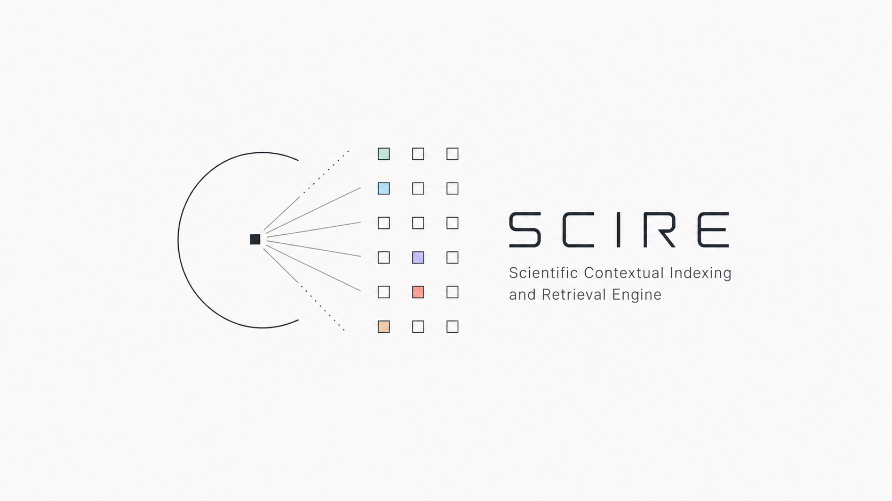
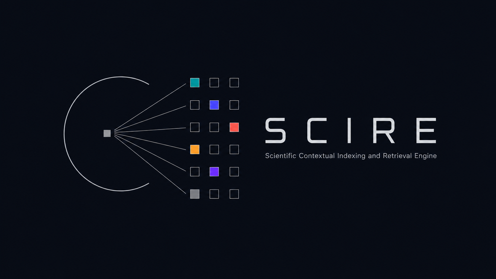
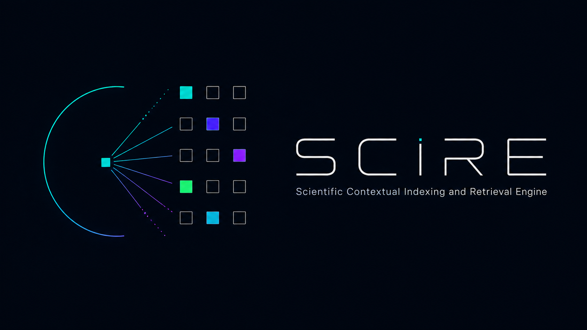
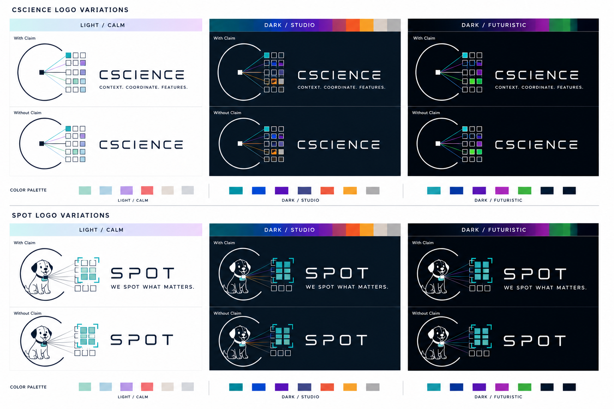

Scientific Computing & Research Software
The organization turns research concepts into reproducible software systems that can be reused across projects rather than rebuilt for every experiment.
github.com/net-csciencenet.cscience · University-internal research software
CScience develops reusable scientific software for exploring, structuring, indexing, retrieving, and understanding spatial, temporal, and multimodal information.
net.cscience01 · Organization
CScience connects research prototypes, reusable foundations, feature infrastructure, and domain applications under one technical identity.
The organization turns research concepts into reproducible software systems that can be reused across projects rather than rebuilt for every experiment.
github.com/net-cscienceIndexing, retrieval, evaluation, and exploration of complex information spaces.
Stable abstractions and runtime infrastructure for feature-oriented applications.
Reusable model-backed extraction across Python, .NET, and service boundaries.
Focused systems such as SPOT and Lecture Insights built on the shared platform.
02 · Public repositories
Seven public repositories currently cover the research platform, shared foundations, feature infrastructure, fixtures, and this organization portal.



Interactive indexing and semantic retrieval of spatially grounded sub-concepts in complex 3D scenes.
Shared contracts and runtime infrastructure for contexts, coordinates, schemas, features, and plugins.
Modular media-feature extraction with shared datatypes, conversion, configuration, and connectors.
Connects the Python feature workspace to .NET applications through an explicit interoperability layer.
Exposes CScience Python feature implementations through a service-oriented integration boundary.
Shared reference material for repeatable feature tests across packages and integration paths.
The organization overview and shared visual reference you are reading now.
03 · Systems family
Shared foundations provide continuity. Each system keeps a distinct role, domain, and product expression.
Portfolio owner and shared technical identity for scientific computing and research software.
Scientific Contextual Indexing and Retrieval Engine. The reusable backbone for heterogeneous information spaces.
A net.cscience research platform
Novice-oriented spatial video search focused on finding the meaningful region inside an image or sequence.
We spot what matters.Structured analysis, comparison, and exploration of university lecture-catalog information.
No isolated logo asset is available yet.Shared conceptual model
A context defines the information space, a coordinate identifies a concrete position within it, and features make that position indexable and retrievable. This model connects the software architecture and the visual language.
Open the style system